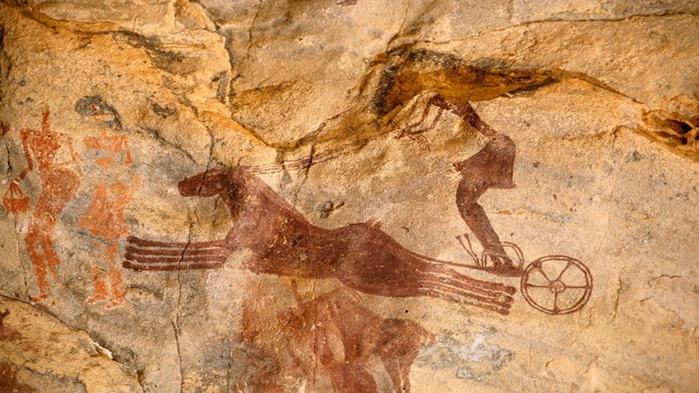

لبدة الكبرى
وجهة تراثية كبرى تقدم للزائر مدخلًا لفهم تاريخ ليبيا وتنوعها الحضاري.
 Visit Libya
زور ليبيا
◉ English
Visit Libya
زور ليبيا
◉ English
ليبيا متحف مفتوح للحضارات، من الفن الصخري والمدن القديمة إلى المواقع الرومانية والإغريقية والصحراوية.
اعترف بالتراث الثقافي الليبي ضمن التراث العالمي عبر خمسة مواقع لما تحمله من قيمة استثنائية ومعايير جمالية وفنية ومعمارية وتاريخية.
وجهة تراثية كبرى تقدم للزائر مدخلًا لفهم تاريخ ليبيا وتنوعها الحضاري.

وجهة تراثية كبرى تقدم للزائر مدخلًا لفهم تاريخ ليبيا وتنوعها الحضاري.

وجهة تراثية كبرى تقدم للزائر مدخلًا لفهم تاريخ ليبيا وتنوعها الحضاري.

وجهة تراثية كبرى تقدم للزائر مدخلًا لفهم تاريخ ليبيا وتنوعها الحضاري.

وجهة تراثية كبرى تقدم للزائر مدخلًا لفهم تاريخ ليبيا وتنوعها الحضاري.
يمتد الفن الصخري في الصحراء الليبية ومرتفعات الجبل الأخضر والجبل الغربي، ويعرض مراحل تطور الإنسان من الصيد والالتقاط إلى استئناس الحيوانات والزراعة والعربات.
نشأت المدن القديمة في ليبيا كمحطات للقوافل ومراكز تبادل تجاري، ونجحت في تحقيق توازن بين الحياة الاجتماعية والبيئة والعمارة المحلية.

ينتشر على طول الساحل الليبي عدد كبير من المواقع الأثرية المغمورة، نتيجة النشاط التجاري القديم والتحولات الطبيعية والزلازل.

تحفظ القلاع والحصون والقصور ذاكرة الدفاع والتجارة والتحولات العمرانية في المدن والسواحل والجبال الليبية.

تجسد الحضارة الجرمنتية قصة البقاء في الصحراء، حيث ظهرت المستوطنات والحقول وأنظمة الري القديمة في وادي الحياة وجرمة.

تضم ليبيا شبكة من المتاحف التي تعرض تاريخًا موغلًا في القدم، من متاحف السرايا الحمراء ولبدة وصبراتة وشحات وغدامس وجرمة إلى متاحف متخصصة وتراثية.

تمثل الأسواق التقليدية ذاكرة المدن القديمة وحيوية الحرف والروائح والألوان ولقاءات الزائر مع الحياة اليومية.